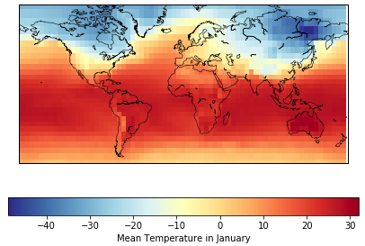
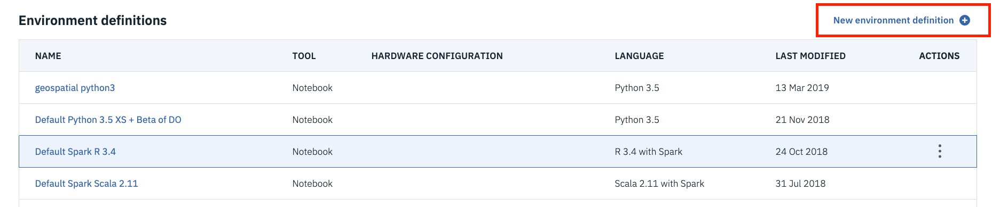
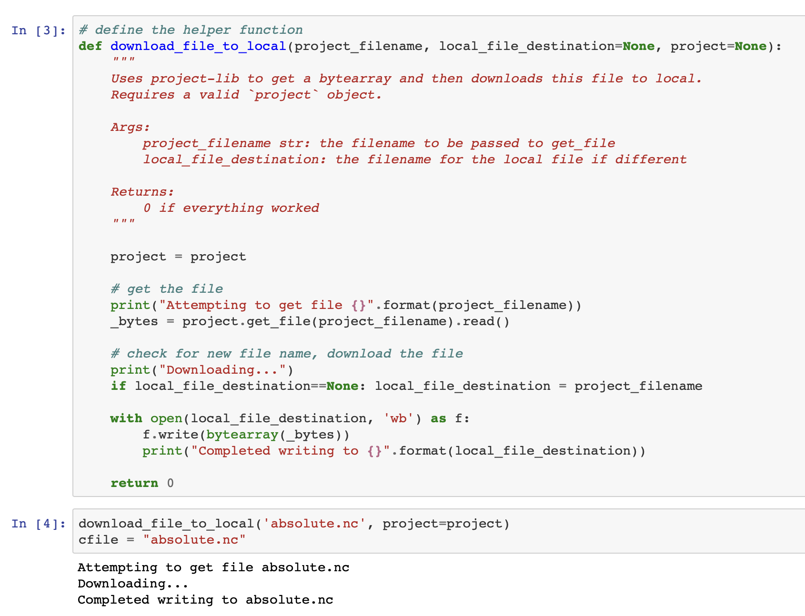
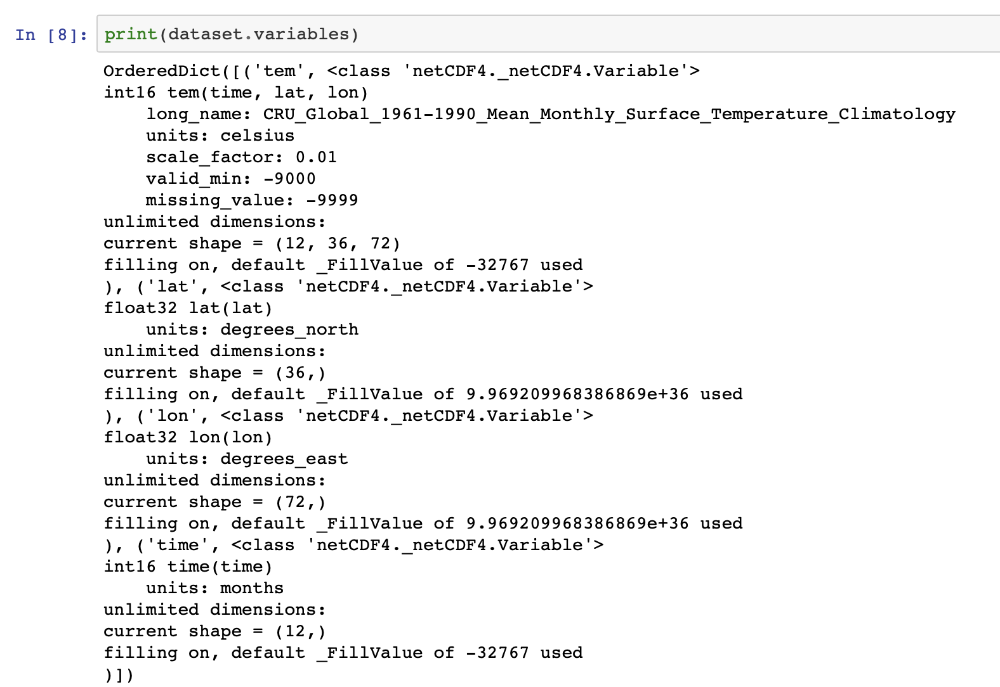
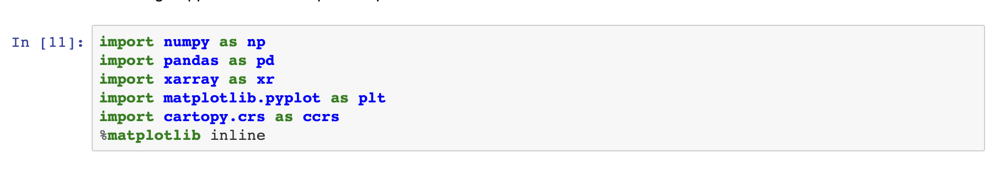
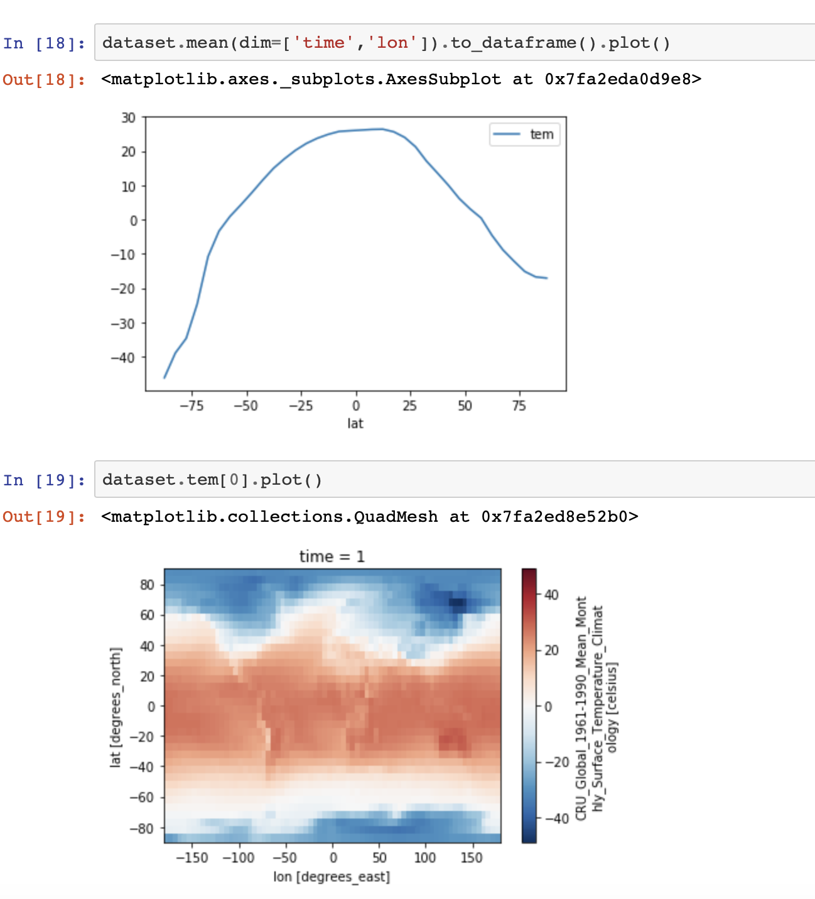

Raster data is a type of geospatial data that contains information about the geometric location in the form grids and matrices. Depending on the type and number of attributes, these matrices can be multidimensional, with each dimension representing a feature and each pixel within it containing a value that represents a feature. For example, a data set that contains weather information for a city represented as a multidimensional array can include details about temperature, relative humidity, and wind velocity. Satellite images or any images representing geographical locations are forms of raster data.

netCDF, PNG, JPEG, TIFF, and binary files are examples of raster data types. An extensive list of the data types can be found raster data file formats list. More information on raster data and the different ways of representing and accessing raster data using Python is described in the "Introduction to geospatial data using Python" article. In this tutorial, we provide code examples to explain how to work with raster data in Python.
Prerequisites¶
To complete this tutorial, you need:
- An IBM Cloud account
- Watson Studio
Steps¶
Set up¶
-
Sign up or log in to IBM Cloud.
-
Click Create resource at the top of the Resources page. You can find the resources under the hamburger menu at the upper left.

-
Search for Watson Studio, and click that tile.

-
Select the Lite plan, and click Create.
-
Go back to the Resources list, click your Watson Studio service, and then click Get Started.

You should now be in Watson Studio.
-
Click either Create a project or New project.
- Select Create an empty project.
- Give the project a name.
- Choose an existing Object Storage service instance or create a new one. This is used to store the notebooks and data. Note: Don't forget to click refresh when returning to the Project page.
- Click Create.
Create a project Access token¶
To load data into a notebook, you need an Access token.
- Go the Settings tab at the top of the project and scroll down to Access tokens.
- Click New token.
-
Name the new token, select Editor, and click Create.

You will need this later in the notebook.
Create a custom Python environment¶
Because the required libraries are not installed in the default Python environment, you must create a customized environment by using conda create. However, because the environment is running in IBM Cloud, there are a few steps to go through.
- Go to the environments tab at the top of your project.
-
Click New environment definition.

-
Name your new environment.
-
Keep the default, select the free hardware configuration Free - 1 vCPU and 4 GB RAM, Default Python 3.6, and click Create.

-
Customize the new environment. Scroll down, and click Create link under Customization

-
A text field opens that you can edit. Delete all of the text, and copy and paste the following code into the text field.
``` channels: - defaults - conda-forge
Please add conda packages here¶
dependencies: - mapclassify==1.0.1 - netcdf4 - xarray - numpy=1.16.4 - tensorboard=1.13.0 - basemap=1.2.1 - cartopy
Please add pip packages here¶
To add pip packages, please comment out the next line¶
- pip:¶
``` 1. Click Apply.
Now you can use this new environment to run notebooks
Load and run a notebook¶
To add a new notebook:
-
Click Add to project, and choose Notebook.

-
Choose New notebook from URL.
- Name your notebook, and copy the URL https://github.com/IBM/data-analysis-using-python/blob/master/notebooks/raster-data-using-python.ipynb.
- Select the Custom runtime environment that you created, and click Create Notebook.
The notebook loads. Follow the instructions in the notebook, and run all cells. Then, return to this tutorial.
Notebook overview¶
About the data set¶
The data set contains a 5° by 5° grid with absolute temperatures for the years 1961 - 1990. The data is represented in a NetCDF format.
netCDF4 and matplotlib¶
Data analysis using netCDF¶
In the first half of this tutorial, you see how to use Python's GnetCDF4 module to extract data from the data set. The following code sample shows the explicit list of imports that we used throughout this notebook.

First, we import the data set with a helper function that uses the project token created in the previous steps.

Then, we use the netCDF4 Dictionary collection to analyze the data and its relations between the fields that constitute the netCDF file.

To extract the data model version of the netCDF file, we use the data_model variable. The data model can be one of NETCDF3_CLASSIC, NETCDF4, NETCDF4_CLASSIC, NETCDF3_64BIT_OFFSET OR NETCDF3_63BIT_DATA data model versions.

dimensions returns a dictionary with variables names from the data set mapped to instances of the Dimensions class. It provides the name of the variable along with its size.

variables returns a dictionary that maps the variables names from the data set as instances of the Variable class.

The following code example shows how variables from the data set can be accessed as keys of the dictionary returned in the variables code sample.

Plotting using matplotlib¶
Now, let's look at how matplotlib and its extensions can be used to plot 2D maps in Python. Here, we use the matplotlib basemap toolkit. To map the points on a 2D surface, the basemap class supports 24 different types of projections. In this example, we use Miller Cylindrical Projections, which are generally used for wall maps rather than navigational maps. llcrnrlon and llcrnrlat refer to the longitude and latitude of the lower-left corner of the wanted map domain (degrees). urcrnrlon and urcrnrlat refer to the longitude and latitude of the lower-right corner of the wanted map domain (degrees).

addcyclic adds a longitude column to a set of data. In the code, you see that the longitude array is added to an array containing temperature entries. shiftgrid moves all longitudes and data east or west. The meshgrid method returns coordinate matrices from one-dimensional coordinate arrays. In the code, we use meshgrid to convert longitude and latitude arrays into x and y coordinate arrays.
xarray and Cartopy¶
Data analysis using xarray¶
This part of the tutorial looks at how to use xarray to process the netCDF data. xarray is useful with analyzing multidimensional arrays and shares functions from pandas and NumPy. xarray has proven to be a robust library to handle netCDF files.
The following code example shows the required imports that must be done to be able to run the notebook.

We then open and load the data set using xarray.

xarray supports the following data structures:
DataArray, a multidimensional arrayDataset, a dictionary of multiple DataArray objects
netCDF data is represented as a Dataset in xarray.
values returns an n-dimensional array that represents the values in the data set. You can see that this data set contains three coordinates, lat, lon, and time. It also contains a data variable temperature that is a float value.

dims returns the value of the x, y, and z coordinates.

coords returns just the coordinates section from the values variable.

Because xarray is an extension to pandas, it offers a method that lets you convert the data set to a DataFrame.

Plotting using xarray¶
xarray also supports plotting functions by extending the matplotlib library. DataArray objects can be plotted using xarray libraries. To plot Dataset objects, the relevant DataArrays or dimensions need to be accessed.

Plotting using Cartopy¶
Cartopy is one of several plotting applications that are compatible with xarray. Other applications are Seaborn, HoloViews, and GeoViews.
The following example is a simple example of using cartopy to create visualizations. We compare the Molleweide projection versus the Miller Cylindrical Projections. The Cartopy projection list provides a complete list of projections.

The following example is a heat map that compares the intensity of temperatures between the months of January and June.

Conclusion¶
This tutorial walked you through the basics of geospatial raster data. It gave you an overview of how to analyze NetCDF data using two sets of Python libraries. In the first example, it showed how to use the netCFF4 Python library for extracting data and matplotlib for visualization. In the second example, it showed how to use xarray for handling data and Cartopy for plotting graphs.